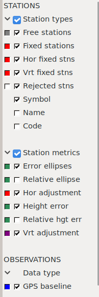
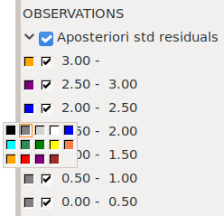

The snapplot key window is used to select colours for each feature on the map and to select which features are displayed. Each feature may have an associated colour and a checkbox.
To hide or display a feature click the check box. Some features may be represented by more than one check box. For example a horizontal angle observation in the adjustment will be affected by the "horizontal angle" check box, and the "Used obs" checkbox. It will only be displayed if both are selected.
Each section with more than one item also has its own checkbox in the title row, used to turn every item in that section on or off together. If the items in a section have a mix of ticked and unticked checkboxes, the section's own checkbox shows an indeterminate mark rather than ticked or unticked. Clicking it while it is unticked or indeterminate ticks every item in the section; clicking it while it is ticked unticks every item. Sections with only one item do not show this checkbox.
Sections of the key with several checkboxes, such as a classification with many values, can be collapsed to just their title row to keep the key compact. Each section's title has a small expand/collapse button beside it (its appearance depends on your operating system); click it to collapse or expand that section. Collapsing a section only hides its individual checkboxes and colour boxes from view - the current selections are unaffected, and continue to control what is displayed or coloured on the map.
To change the colour of a feature, position the mouse over the colour box, and hold down the the left mouse button. This will give display a colour palette. Drag the mouse to a new colour, and release the button to select it.

Additional colours can be added to the palette using the View | Add colour to palette menu item.
Observations and stations are each coloured according to one attribute at a time. Observations can be coloured by data type, data file, size of standardised residual, redundancy factor, or any observation classification, chosen with the Observations | Colour coding menu. Stations can be coloured by their usage in the adjustment or by a station classification, chosen with the Stations | Colour coding menu.
For observations, a separate Display | Select options... menu chooses which of data type, data file, observation status, and each observation classification appear in the key as filters, independently of which one is currently used for colouring. Several can be selected at once - for example the map can be coloured by redundancy while also being filtered by data file and by a classification at the same time. Only the section that is also the current Colour coding choice shows a colour box; the others show checkboxes only. This menu applies only to observations - stations have no equivalent multiple-filter option.
Each Colour coding menu also has Reset all on and Reset all off items, which return every checkbox in that section (and, for observations, the data type and data file sections too) back to a known state.
The following features may be included in the key:
| Free stations Hor fixed stns ... |
This has a category for each usage of station in the adjustment (free (adjusted), fixed (constrained), or rejected). Rejected stations are those that are explicitly rejected in the snap command file, or automatically rejected because there are insufficient observations to calculate their coordinates. The colour box is used to choose the colour of the station symbol (if it is displayed). Note that hiding a group of stations with the check box may also hide all the observations to and from those stations. This behaviour is controlled by the display options dialog. Note also that stations may be shown or hidden with the hide stations dialog. |
| Symbol Name Code |
Chooses whether symbols, names, or codes are displayed for each station |
| Error ellipses ... |
Controls the display of error ellipses of stations, relative error ellipses of observed lines between stations, vertical error bars and relative error bars, and station adjustments (changes to stations coordinates). The scaling of errors is controlled by the error options dialog. |
| OBSERVATIONS | Which observation categories appear here, and which one determines colour, are controlled by the Display and Colour coding menus - see Colour by and Display by above. Data type and data file are shown by default alongside observation status; any observation classification can also be turned on. |
| Used obs Rejected obs Unused obs |
Used obs are observations used to calculate coordinates, or contributing to the adjustment statistics. Rejected obs are observations explicitly rejected in the data file. Unused obs are observations which are not used in the adjustment because they are to automatically rejected stations. |
| BACKGROUND | General features of the map. Additionally if background background graphical features have been added to the plot their display options will be shown here. |
| Map background | Changes the colour used for the map background. |
| Text | Changes the colour used for text (station names or codes). This colour is also used for the border of station symbols. |
| Highlight | Selects the colour used to highlight stations and observations (highlighted stations are selected with the highlight stations dialog, highlighted observations are selected with the highlight observations dialog). |
| Selected | Selects the colour used to represent the selected station or observation. |